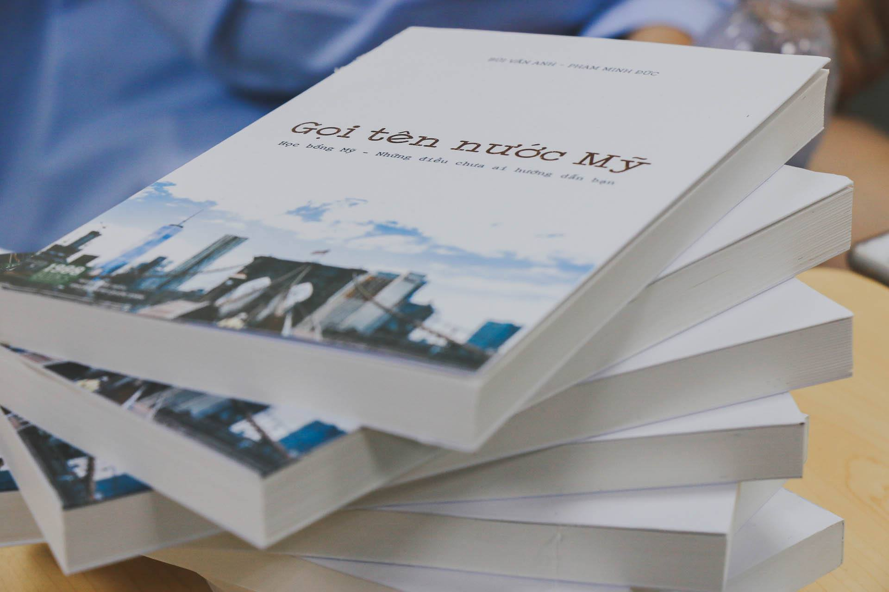

After an absolutely crazy and rewarding application process, my friend, Minh-Duc Pham, and I collaborated on a book called “U Sing America.” This book is a comprehensive and realistic guide on how to apply to US colleges. The idea for the book was conceived because most in our circle of friends applied by ourselves, and although it’s time-consuming and sometimes difficult, the process helps us to be much more independent and decisive and it is also budget-friendly. And we wanted more students to take advantage of what they can really do by themselves and experience this amazing ride.
The book was drafted and written in only over a month after both of us were accepted by our current universities. It was finally published in July 2017 and was premiered in an event that attracted more than 150 parents and students.
It would be detrimental not to talk about my amazing collaborator Minh-Duc Pham, a person that I will forever and ever be grateful for because of his presence, advice, and especially the drive that he passes onto people he talks to. Although we are close already before the project, I wouldn’t expect us to be such a dynamic duo. We complemented each other in expertise, in writing style, in work ethics, etc. It seems pretty crazy now when we look back on our previous summer and realize that we did everything by only the two of us from writing to marketing, to organizing a premiere event, but of course, all of this would not be possible without the support of our families and our friends.
Thanks to this wonderful collaboration, Minh-Duc and I decided to start another project: the second season of U Sing America called U Slay America. More details in the post dedicated to U Slay America (Xoạc Tung Nước Mỹ).
If you’re interested,
the book is available for purchase here.
